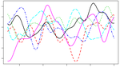
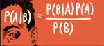

東京の資産運用会社で働く社会人が研究に没頭するブログ
東京の資産運用会社で働く社会人が研究に没頭するブログ
About
Posts
Publications
Contact
Light
Dark
Automatic
Posts
院卒3年目の社会人が夜な夜な更新中。本ブログの内容は筆者が所属する組織の公式見解とは全く関係ありません。
カルマンフィルタの実装
時系列解析には欠かせないカルマンフィルタ。Rでもパッケージが用意されていて非常に便利ですが、ここではいったん理解を優先し、カルマンフィルタの実装を行ってみたいと思います。
Feb 10, 2019
15 分で読める
マクロ経済学
ガウス回帰の実装をやってみた
万能すぎて逆に面白くないと話題のガウス回帰を実装してみました。
Dec 2, 2018
11 分で読める
マクロ経済学

BVARについて
Bayesian VAR（BVAR）と呼ばれる、VARの仲でも予測精度の向上を目材して開発されたモデルを勉強してみました。
最終更新 Apr 29, 2019
24 分で読める
統計学

Gianonne et. al. (2008)のマルチファクターモデルで四半期GDPを予想してみた
前回集めた経済データをGiannone et al (2008)のマルチファクターモデルで推定し、四半期GDPを予測したいと思います。
Jul 16, 2018
10 分で読める
マクロ経済学
日次GDP推計に使用する経済統計を統計ダッシュボードから集めてみた
Rでデータ集めをします。データ分析はデータ集めと前処理が7割を占めるといわれる中、データ集めを自動化すべくウェブスクレイピングを行いました。
Jul 14, 2018
11 分で読める
マクロ経済学
,
Webスクレイピング
rvestでyahoo競馬にある過去のレース結果をクローリングしてみた
今、競馬×データサイエンスが熱いです。ウマナリティクスなるものがあり、これまでのレース結果からなんらかのモデルを作成し、順位予想や回収率を高める馬券購入方法を考えようとする人が一定数いるようです。今回は競馬をデータ解析するためのデータを取得します。rvestを用いて、ごりごりにクローリングを行いました。
最終更新 Jun 10, 2018
22 分で読める
競馬
,
Webスクレイピング
はじめまして
どうもはじめまして。このブログを始めるに当たってまずは自己紹介をしたいと思います。
May 18, 2018
2 分で読める
«
引用
×